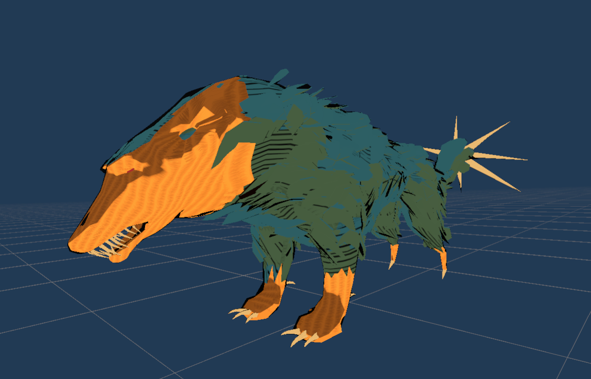
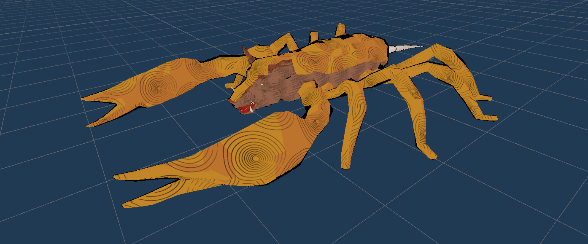
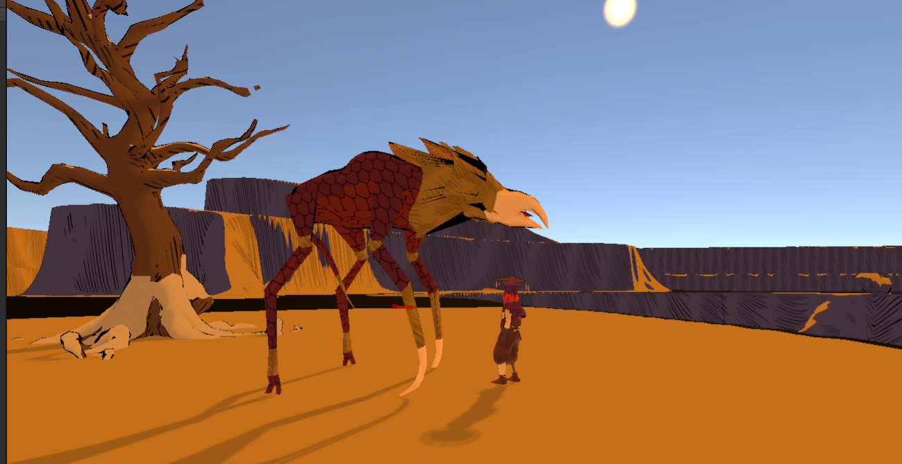

Gamedev log 2# - To-Do list and Monsters!
What took you so long?
Hi. So… this took some time obviously. But here we are. Another gamedev blog?/log? idk… I just had a lot of work around the website and other stuff. However the progress is being made. For the last couple of weeks i have been extensively working on a several things. For the most part i had to put all things in to place. I have created an todo-list kind off. And you can check that out Here. I have also created a roadmap, which you can find on this website in the portfolio section. All of these things doesnt seem like a lot, but trust me… it took quite some time. The planning after all is one of the most important things in the game development. Because it doesnt pay off to just “do something”. A man has to have a plan. Since i do have a plan now, i have started to work on the things that have to be done till the end of this year. You can check the progress on the Trello if you mind to login. I cannot say that the progress is not chaotic yet. It still is, but i finally feel some direction and perhaps some boundaries. OK… lets stop with the “blabla” informations that nobody cares about. So did the shit get done? Well… Checkout these cool examples and be my judge. Today i focused on monsters. I hope you will find them cool! (If you wish to comment, give and advise perhaps, i am working on a solution… hold on buddy - or join my Discord)
Geckyena
Hybrid of hyena and gecko. It is said that the creature combines the best of survival abilities from those two amazing animals into one ultimate survivalist dog-type creature. They are usually very wild and agressive, but there are some that domesticated in homes (tents) of nomad clans. The creature can be usually seen in packs. Similarly to hyenas they prefer to eat corpses and leftovers after alpha predators. But in rare cases they can be hostile even to small groups of humans. Geckyenas can be usually found in a desert areas. And combinations of scales and fur makes them completly resistant to the desert harsh environment.

Scorphog
Hybrid of scorpion and a hog! Weird… Well those animals might seem strange to you, but they are easy to be scientifycaly explained! Both of these animals were probably held in some ZOO next to each other, before the end of the world. After an intensive exposure of radiation and other anomalies they just turned into this! Nowadays they wander in the desert leaving no witness behind! They are rare to be found for many reasons. They are very hostile. Usually very hungry! And they are hunted by fearless hunters for their sweat meat, strong poison and very hard shell that is mostly used for armor crafting. If you stumble on them anyways, try to avoid the stinger that replaced the usuall scorpion tail. Its shorter but its poison will stun your for quite some time and hog are pretty known for eating their victims alive.

Chopper
This time we have got something special. Choppers are alpha predators of the desert. Their origin is quite unknown. They are very large creatures that usually occur in groups of three or four. Needless to say most of the people that saw them upclose couldnt bring a testimony about their numbers or anything else. “Luckily” their skin is covered by hard scales that shine far into the desert. So its easy to avoid them for experienced hunters. But for naive treasure hunters they usually become their doom. From anatomycal sight of view the most interesting thing about them would be their long front legs with curved claws. I dont have to tell you that those are the reason why these creatures are called “choppers”… An intersting body part would also be a long beak, that is used to consume sweat palm fruit that usually grows on the top of the desert palms.

Thats it?
I will be sure to post logs more often. We have got a whole world to talk about after all! Be ready for animals and an extensive log about player attributes. And of course i cannot forget about those beautiful harvestables, that are nicely coming trough. Stay tuned! CYA